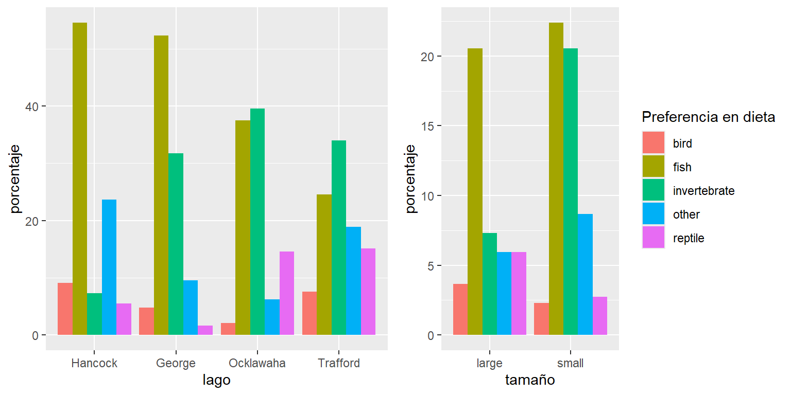
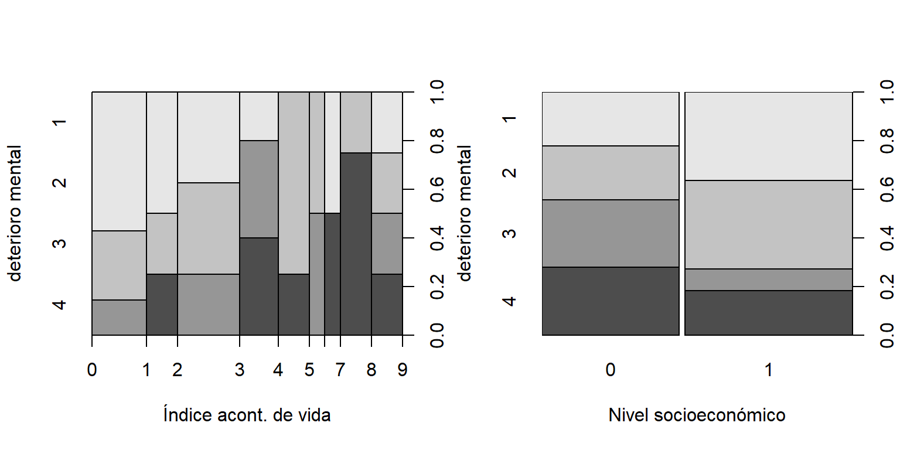
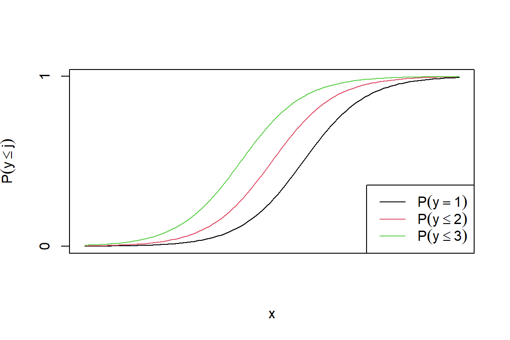
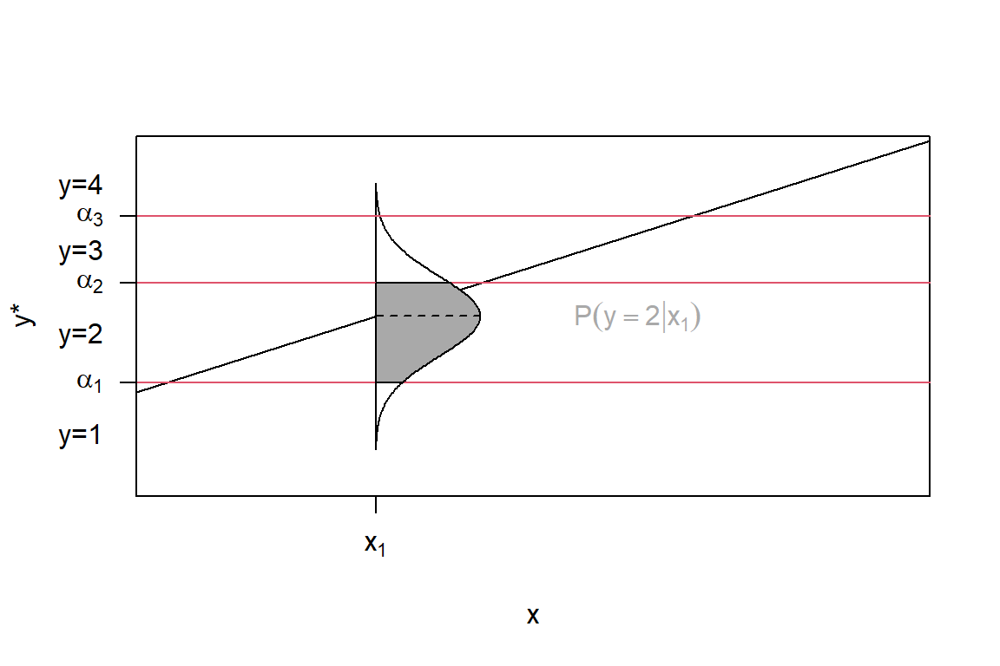

Capítulo 4 Modelos multinomiales
4.1 Casos de estudio
4.1.1 Datos de dieta de caimanes
Se quiere determinar los factores que influyen en la dieta principal de caimanes de cuatro lagos de la Florida (Hancock, George, Ocklawaha y Trafford). Para esto se tomó una muestra de 219 especímenes y se catalogó los caimanes según su tamaño como grande si mide más de 2.3 metros y pequeño si lo contrario. Los datos se encuentran en la base de datos caimanes.csv
caimanes = read.csv('caimanes.csv')
caimanes$lake = as.factor(caimanes$lake)
caimanes$lake = relevel(caimanes$lake,ref ='Hancock')
caimanes$size = as.factor(caimanes$size)
caimanes## lake size fish invertebrate reptile bird other
## 1 Hancock small 23 4 2 2 8
## 2 Hancock large 7 0 1 3 5
## 3 Ocklawaha small 5 11 1 0 3
## 4 Ocklawaha large 13 8 6 1 0
## 5 Trafford small 5 11 2 1 5
## 6 Trafford large 8 7 6 3 5
## 7 George small 16 19 1 2 3
## 8 George large 17 1 0 1 3
Figure 4.1: Frecuencias relativas de la preferencia de dieta según el lago (izquierda) y el tamaño (derecha).
En la Figura 4.1 se observan diferencias en la composición de la dieta de los caimanes según el lago y el tamaño. En los lagos Hancock y George, predominan los peces en la dieta. En los otros dos lagos, el consumo está más diversificado, aunque los invertebrados son más frecuentes. Asimismo, los caimanes grandes consumen principalmente peces.
4.1.2 Datos de incapacidad mental
Estudio de salud mental sobre adultos residentes del condado de
Alachua, Florida. Datos en Mental.dat. El deterioro mental es una variable \((Y)\) ordinal con cuatro categorías (1: sano, 2: presencia de síntomas leves, 3: presencia de síntomas moderados, 4: deterioro. El estudio relacionó esta variable con varias variables explicativas, de las cuales tendremos en cuenta dos. La primera es el índice de acontecimientos de vida (life), el cuál es una medida compuesta que considera el número y la gravedad de sucesos importantes ocurridos al sujeto en los últimos 3 años, tales como el nacimiento de un hijo, un nuevo empleo, un divorcio o un fallecimiento en la familia. En esta muestra, esta varía entre \(0\) y \(9\), con una media de \(4.3\) y una desviación estándar de \(2.7\). La otra es el nivel socioeconómico (ses) se mide aquí como una variable binaria (1: alto, 0: bajo).

Figure 4.2: Relación entre el deterioro mental con el índice de acontecimientos de vida (izquierda) y nivel socioeconómico (derecha).
En la Figura 4.2 podemos observar los pacientes que reportaron mayor índice de acontecimientos de vida presentan niveles de deterioro mental más altos. De igual forma, los pacientes de nivel socioeconómico bajo presetan un poco más casos de mayor deterioro mental.
4.2 Distribución multinomial
Considere una variable respuesta \(Y\) cualitativa que tiene \(c\) categorías. La probabilidad de la \(j\)-esima categoría es \(\pi_{j}\), con \(\sum_{j=1}^{c} \pi_{j} = 1\). Sea \(\boldsymbol y= (y_{i1},\ldots, y_{ic})\) un ensayo multinomial con: \[ y_{k} = \begin{cases} 1 & \mbox{cuando la respuesta está en la categoría }k, \\ 0 & \mbox{si lo contrario}. \end{cases} \] Entonces, \(\sum_{j=1}^{c}y_{j} = 1\). La de distribución de \(Y\) se llama multinomial y está definida como: \[\begin{equation} \begin{split} f(\boldsymbol y; \boldsymbol \pi) =& \frac{n_!}{n_{1}!n_{2}!\ldots n_{c}!}\pi_{1}^{n_{1}}\ldots\pi_{c}^{n_{c}} \\ =& \frac{n_!}{n_{1}!n_{2}!\ldots n_{c}!} \exp\left( \sum_{k=1}^c y_k\log \pi_k \right). \end{split} \tag{4.1} \end{equation}\] Tenemos que, \(E(Y_{k}) = n\pi_{k}\), \(V(Y_{k}) = n_i\pi_{k}(1-\pi_{k}),\) y \(Cov(Y_{k},Y_{l}) = -n\pi_{k}\pi_{l}\). Dado que \(\pi_c = 1 - \sum_{k=1}^{c-1}\), ((4.1)) se puede expresar como:
\[\begin{equation} \begin{split} f(\boldsymbol y; \boldsymbol \pi) =& A\exp\left[\sum_{k=1}^{c-1}n_{k}\log \pi_k + \left(n - \sum_{k=1}^{c-1}n_{k} \right)\log\left(1 - \sum_{k=1}^{c-1}\pi_k \right) \right] \\ =& A\exp\left[\sum_{k=1}^{c-1} \log \left( \frac{\pi_k}{1 - \sum_{k=1}^{c-1}\pi_k} \right)n_k + n\log\left( 1- \sum_{k=1}^{c-1} \pi_{k} \right) \right], \end{split} \tag{4.2} \end{equation}\] donde \(A = \frac{n_!}{n_{1}!n_{2}!\ldots n_{c}!}\).
De aquí, tenemos que \(\theta_k = \log \left( \frac{\pi_k}{1 - \sum_{k=1}^{c-1}\pi_k} \right)\), \(b(\theta_k) = n\log \left( \sum_{k=1}^{c}\exp \theta_k\right)\), \(a(\phi) = 1\) y \(c(y,\phi) = \log A.\) Por lo que la distribución multinomial pertenece la familia exponencial.
4.3 Modelo logístico multinomial
Para \(\boldsymbol y_i\) con \(c\) categorías (nominales), se pueden usar modelos logísticos para describir simultáneamente los \(\log\) odds para los \(c(c-1)/2\) pares de categorías. Dada cierta elección, por ejemplo \(c\), solo se necesitan \(c-1\) de estos pares:
\[
\log \frac{\pi_{i1}}{\pi_{ic}}, \log \frac{\pi_{i2}}{\pi_{ic}}, \ldots, \log \frac{\pi_{i,c-1}}{\pi_{ic}},
\]
donde la categoría \(c\) se define como de referencia. Entonces, para la \(j\)-ésima categoría, tenemos que:
\[
\mbox{logit}[ P(y_{ij}=1 | y_{ij}=1 \mbox{ o } y_{ic}=1) ]
= \log \left[ \frac{ P(y_{ij}=1 | y_{ij}=1 \mbox{ o } y_{ic}=1 )}{1- P(y_{ij}=1 | y_{ij}=1 \mbox{ o } y_{ic}=1 )} \right] = \log \frac{\pi_{ij}}{\pi_{ic}}.
\]
Esta cantidad puede ser modelada como una función de un vector de covariables \(\boldsymbol x_i\) a través de un modelo logístico:
\[
\log \frac{\pi_{ij}}{\pi_{ic}} = \boldsymbol x_i'\boldsymbol \beta_j,
\]
donde \(\boldsymbol \beta_j = (\beta_{j0},\beta_{j2},\ldots,\beta_{j,p-1})'\) es un vector de parámetros para el \(j\)-ésimo logit, con \(\boldsymbol \beta_c = \boldsymbol 0\). De aquí, podemos obtener las probabilidad de la siguiente forma:
\[
\pi_{ij} = \pi_{ic} \exp(\boldsymbol x_{i}'\boldsymbol \beta).
\]
Puesto que \(\pi_{i1}+\ldots+\pi_{ic} =1\), se tiene que:
\[
\pi_{ic} = \frac{1}{1+ \sum_{j=1}^{c-1}\exp(\boldsymbol x_i'\boldsymbol \beta)},
\]
y por lo tanto:
\[
\pi_{ij} = \frac{\exp(\boldsymbol x_i'\boldsymbol \beta_j)}{1+ \sum_{j=1}^{c-1}\exp(\boldsymbol x_i'\boldsymbol \beta)}.
\]
4.3.1 Estimación de parámetros
La contribución a la log-verosimilitud del \(i\)-ésimo individuo está dada por: \[\begin{equation} \begin{split} \log \left( \prod_{j=1}^{c}\pi_{ij}^{y_{ij}} \right) &= \sum_{j=1}^{c-1}y_{ij}\log \pi_{ij} + \left( 1 - \sum_{j=1}^{c-1}y_{ij} \right)\log \pi_{ic} \\ &= \sum_{j=1}^{c-1}y_{ij} \log \frac{\pi_{ij}}{\pi_{ic}} + \log \pi_{ic} \\ &= \sum_{j=1}^{c-1}y_{ij}\boldsymbol x_i'\boldsymbol \beta_j - \log \left[ 1 + \sum_{j=1}^{c-1}\exp(\boldsymbol x_i'\boldsymbol \beta_j) \right], \end{split} \nonumber \end{equation}\] entonces, la función de verosimilitud es: \[\begin{equation} \begin{split} \ell (\boldsymbol \beta) &= \log \left[ \prod_{i=1}^{N} \left( \prod_{j=1}^{c}\pi_{ij}^{y_{ij}} \right) \right] \\ &= \sum_{i=1}^{N} \left\{ \sum_{j=1}^{c-1}y_{ij}\boldsymbol x_i'\boldsymbol \beta_j - \log \left[ 1 + \sum_{j=1}^{c-1}\exp(\boldsymbol x_i'\boldsymbol \beta_j) \right] \right\} \\ &= \sum_{j=1}^{c-1} \left[ \sum_{k=0}^{p-1}\beta_{jk}\left( \sum_{i=1}^{N}y_{ij}x_{ik} \right) \right] - \sum_{i=1}^{N}\log \left[1 - \sum_{j=1}^{c-1}\exp(\boldsymbol x_{j}'\boldsymbol \beta_j) \right], \end{split} \nonumber \end{equation}\] con \(x_{i0}=1\) (asociado al intercepto). La función score esta dada por: \[ u(\beta_{ij}) =\frac{\delta \ell(\boldsymbol \beta)}{\delta \beta_{jk}} = \sum_{i=1}^N x_{ik}y_{ij} - \sum_{i=1}^N \left[ \frac{x_{ik}\exp(\boldsymbol x_i'\boldsymbol \beta_j)}{1+ \sum_{l=1}^{c-1}\exp(\boldsymbol x_i'\boldsymbol \beta_l)} \right] = \sum_{i=1}^{N}x_{ik}(y_{ij}-\pi_{ij}). \] Los elementos de la matriz hessiana está dada por: \[ \frac{\delta^2 \ell(\boldsymbol \beta)}{\delta \beta_{jk}\delta \beta_{jk'}} = - \sum_{i=1}^{N}x_{ik}x_{ik'}\pi_{ij}(1-\pi_{ij}), \] y para \(j\neq j'\), \[ \frac{\delta^2 \ell(\boldsymbol \beta)}{\delta \beta_{jk}\delta \beta_{j'k'}} = \sum_{i=1}^{N} x_{ik}x_{ik'}\pi_{ij}\pi_{ij'}. \] De aquí, la matriz de información contiene \((c-1)^{2}\) bloques de tamaño \((p \times p)\), \[ - \frac{\partial^{2}\ell(\boldsymbol \beta)}{\partial \boldsymbol \beta_{j} \partial \boldsymbol \beta_{j'}} = \sum_{i=1}^{N} \pi_{ij} \left[ I(j=j') - \pi_{ij'} \right] \boldsymbol x_i '\boldsymbol x_i. \] La matriz hessiana es definida negativa, por lo que la función de log-verosimilitud es cóncava y posee un único máximo. La información observada (- matriz hessiana) y la esperada son idénticas (matriz de información). En consecuencia, el método de Newton-Raphson es equivalente al método de Fisher scoring para obtener las estimaciones de máxima verosimilitud. Esto se debe a que la función de enlace utilizada es la función de enlace canónica. La convergencia suele ser rápida, a menos que al menos una de las estimaciones sea infinita o no exista (problema de separación).
Para datos agrupados con \(n_i\) observaciones asociadas a \(\boldsymbol x_i\), sea \(y_{ij}\) la proporción de observaciones en la categoría \(j\). La devianza y el estadístico \(X^2\) de Pearson son: \[ D = 2 \sum_{i=1}^{n}\sum_{j=1}^{c} n_{i}y_{ij} \log \frac{n_iy_{ij}}{n_i\widehat{\pi}_{ij}}, \] y \[ X^2 = \sum_{i=1}^{n}\sum_{j=1}^{c} \frac{(n_i)y_{ij}-n_i\widehat{\pi}_{ij}}{n_i\widehat{\pi}_{ij}}, \] respectivamente. Al igual que en el caso binario, cuando los datos están agruados, \(G^2\) y \(X^2\) pueden utilizarse para evaluar la bondad de ajuste del modelo. Ambos estadísticos siguen, de forma aproximada, bajo \(H_{0}\), una distribución \(\chi^2\) con grados de libertad iguales a \(N(c − 1)\) menos el número de parámetros del modelo. Esta aproximación es buena cuando las frecuencias esperadas en las celdas sean, en su mayoría, superiores a 5.
4.3.2 Ilustración en R
Para modelar el efecto del tamaño del caimán y el lago en que habita sobre la elección del alimento principal vamos a utilizar un modelo logístico multinomial. El modelo propuesto es el siguiente: \[ \log (\pi_{ij} / \pi_{i4}) = \beta_{j0} + \beta_{j1}s_i + \beta_{j2}z_{i}^{O} + \beta_{j3}z_{i}^{T} + \beta_{j4}z_{i}^{G}, \] para \(j=1,2,3\), donde \(s_i=1\) si el \(i\)-ésimo caiman es pequeño, \(s_i=0\) si lo contrario; \(z^{O}\), \(z^{T}\) y \(z^{G}\) son variables indicadoras asociadas a los lagos Ocklawaha, Trafford y Hancock, respectivamente. Además, vamos a considerar que \(\pi_{i4}\) corresponde a la probabilidad asociada al consumo de peces (categoría de referencia).
El ajuste en R lo podemos hacer utilizando la función
library(VGAM)
fit.alligator <- vglm(cbind(invertebrate,reptile,bird,other,fish) ~ size + lake, family=multinomial, data=caimanes)
summary(fit.alligator)##
## Call:
## vglm(formula = cbind(invertebrate, reptile, bird, other, fish) ~
## size + lake, family = multinomial, data = caimanes)
##
## Coefficients:
## Estimate Std. Error z value Pr(>|z|)
## (Intercept):1 -3.2074 0.6387 -5.021 5.13e-07 ***
## (Intercept):2 -2.0718 0.7067 -2.931 0.003373 **
## (Intercept):3 -1.3980 0.6085 -2.297 0.021601 *
## (Intercept):4 -1.0781 0.4709 -2.289 0.022061 *
## sizesmall:1 1.4582 0.3959 3.683 0.000231 ***
## sizesmall:2 -0.3513 0.5800 -0.606 0.544786
## sizesmall:3 -0.6307 0.6425 -0.982 0.326296
## sizesmall:4 0.3316 0.4482 0.740 0.459506
## lakeGeorge:1 1.6584 0.6129 2.706 0.006813 **
## lakeGeorge:2 -1.2428 1.1854 -1.048 0.294466
## lakeGeorge:3 -0.6951 0.7813 -0.890 0.373608
## lakeGeorge:4 -0.8262 0.5575 -1.482 0.138378
## lakeOcklawaha:1 2.5956 0.6597 3.934 8.34e-05 ***
## lakeOcklawaha:2 1.2161 0.7860 1.547 0.121824
## lakeOcklawaha:3 -1.3483 1.1635 -1.159 0.246529
## lakeOcklawaha:4 -0.8205 0.7296 -1.125 0.260713
## lakeTrafford:1 2.7803 0.6712 4.142 3.44e-05 ***
## lakeTrafford:2 1.6925 0.7804 2.169 0.030113 *
## lakeTrafford:3 0.3926 0.7818 0.502 0.615487
## lakeTrafford:4 0.6902 0.5597 1.233 0.217511
## ---
## Signif. codes: 0 '***' 0.001 '**' 0.01 '*' 0.05 '.' 0.1 ' ' 1
##
## Names of linear predictors: log(mu[,1]/mu[,5]), log(mu[,2]/mu[,5]), log(mu[,3]/mu[,5]),
## log(mu[,4]/mu[,5])
##
## Residual deviance: 17.0798 on 12 degrees of freedom
##
## Log-likelihood: -47.5138 on 12 degrees of freedom
##
## Number of Fisher scoring iterations: 5
##
##
## Reference group is level 5 of the responseDado que se tiene un número grande de parámetros, el ajuste es complicado de leer. De aquí tenemos que la devianza es \(17.08\), realizando la prueba de bondad de ajuste (gl\(=12\)) encontramos un valor-\(p\) igual a \(0.147\), lo que indica que el modelo proporciona buen ajuste. Para evaluar el efecto del tamaño, podemos evaluar \(H_0: \beta_{j1}=0\), para \(j=1,\ldots,4\). Usando la prueba de razón de verosimilitud encontramos el siguiente resultado:
fit.alligator0 <- vglm(cbind(invertebrate,reptile,bird,other,fish) ~ lake, family=multinomial, data=caimanes)
anova(fit.alligator0,fit.alligator,type=1,test='LRT')## Analysis of Deviance Table
##
## Model 1: cbind(invertebrate, reptile, bird, other, fish) ~ lake
## Model 2: cbind(invertebrate, reptile, bird, other, fish) ~ size + lake
## Resid. Df Resid. Dev Df Deviance Pr(>Chi)
## 1 16 38.167
## 2 12 17.080 4 21.087 0.0003043 ***
## ---
## Signif. codes: 0 '***' 0.001 '**' 0.01 '*' 0.05 '.' 0.1 ' ' 1Esto implica que el tamaño del caiman si influye de forma significativa sobre la dieta principal. De igual forma podemos determinar si el lago tiene un efecto significativo sobre la dieta:
fit.alligator0 <- vglm(cbind(invertebrate,reptile,bird,other,fish) ~ size, family=multinomial, data=caimanes)
anova(fit.alligator0,fit.alligator,type=1,test='LRT')## Analysis of Deviance Table
##
## Model 1: cbind(invertebrate, reptile, bird, other, fish) ~ size
## Model 2: cbind(invertebrate, reptile, bird, other, fish) ~ size + lake
## Resid. Df Resid. Dev Df Deviance Pr(>Chi)
## 1 24 66.213
## 2 12 17.080 12 49.133 1.983e-06 ***
## ---
## Signif. codes: 0 '***' 0.001 '**' 0.01 '*' 0.05 '.' 0.1 ' ' 1Al igual que en el caso anterior, encontramos que el lago también tiene una influencia sobre la dieta principal de los caimanes.
El modelo ajustado permite comparar las probabilidades de preferir un tipo de alimento con respecto a los peces (categoría de referencia), es decir obtenemos cuatro ecuaciones diferentes. Por ejemplo, para comparar la preferencia entre consumo de invertebrados sobre peses, tenemos: \[ \log (\widehat{\pi}_{i1}/\widehat{\pi}_{i4}) = -3.207+ 1.458 s_i + 2.596z_{i}^{O} +2.780z_{i}^{T}+ 1.658z_{i}^{G}. \]
De aquí podemos concluir que, para caimanes pequeños, la probabilidad de elegir invertebrados como alimento principal, en lugar de peces, es \(\exp(1.458) = 4.30\) (95% IC \(\{1.98, 9.34\}\)) veces mas grandes que para caimanes grandes. Con respecto a los lagos, la probabilidad de elegir invertebrados como dieta principal, en lugar de peces, es más alta en los lagos Ocklawaha, Trafford y George que en el lago Hancock.
Ahora, podemos comparar el consumo principal de aves con respecto a peces de la siguiente forma:
\[ \log (\widehat{\pi}_{i1}/\widehat{\pi}_{i3}) = -1.398 -0.631 s_i -1.348z_{i}^{O}+ 0.393z_{i}^{T} -0.695z_{i}^{G} \] A diferencia del caso anterior, los caimanes pequeños tiene probabilidad de elegir aves como alimento principal, en lugar a peces, mas pequeña que para caimanes grandes. Sin embargo esta diferencia no es significativa. En comparación con el lago Hancock, esta probabilidad es menor en los lagos Ocklawaha y en George; mientras que es mayor en lago Trafford.
A partir de estos resultados también se pueden obtener estimaciones de las probabilidades. Por ejemplo, la probabilidad estimada de que un caimán grande en el lago George tenga los invertebrados como su principal fuente de alimento es: \[ \widehat{\pi}_{i2} =\frac{e^{-3.207+1.658}}{1 + e^{-3.207+1.658} + e^{-2.072-1.243} + e^{-1.398-0.695} + e^{-1.078-0.826}}= 0.14. \] En R, estas se pueden encontrar de la siguiente forma:
## lake size invertebrate reptile bird other fish
## 1 Hancock small 0.09309880 0.04745657 0.070401523 0.25373963 0.5353035
## 2 Hancock large 0.02307168 0.07182461 0.140896287 0.19400964 0.5701978
## 3 Ocklawaha small 0.60189675 0.07722761 0.008817482 0.05387208 0.2581861
## 4 Ocklawaha large 0.24864518 0.19483742 0.029416085 0.06866281 0.4584385
## 5 Trafford small 0.51683852 0.08876722 0.035894709 0.17420051 0.1842990
## 6 Trafford large 0.19296122 0.20239954 0.108225068 0.20066164 0.2957525
## 7 George small 0.41285579 0.01156654 0.029671169 0.09380245 0.4521040
## 8 George large 0.13967784 0.02389871 0.081067366 0.09791362 0.6574425Consideremos otro ejemplo con los datos de caimanes pero considerando la covariable tamaño como cuantitativa. … los otros datos de caimanes …
4.4 Variable respuesta ordinal. Modelos logit acumulativos (odds proporcionales)
Sea \(y_i\) una variable respuesta categórica para el \(j\)-ésimo individuo. Entonces, \(y_i=j\) significa que \(y_{ij} =1\) y \(y_{ik} =0\) para \(k \neq j\). Si consideramos que la variable es ordinal, el modelo lo podemos expresar en términos de las probabilidades acumulativas: \[ P(y_i \leq j) = \pi_{i1}+\pi_{i2}+\ldots+\pi_{ij}, \qquad j=1,\ldots,c. \] A partir de estas probablidades podemos obtener los logits acumulativos: \[ \mbox{logit} \left[ P(y_i \leq j) \right] = \log \frac{P(y_i \leq j)}{1-P(y_i \leq j)} = \log \frac{\pi_{i1}+\ldots+\pi_{ij}}{\pi_{i,j+1}+\ldots+\pi_{ic}}. \] Un modelo para logit\([P(y_i \leq j)]\) por sí solo es un modelo logístico ordinario para una respuesta binaria, en el cual las categorías de \(1\) a \(j\) representan éxito y las categorías de \(j + 1\) a \(c\) representan fracaso. Entonces, una forma de modelar simultáneamente todos los \((c − 1)\) logits acumulados es el siguiente: \[ \mbox{logit}[P(y_i \leq j)] = \alpha_j + \boldsymbol x_i'\boldsymbol \beta, \qquad j=1,\ldots,c-1. \]
Cada logit acumulativo tiene su propio intercepto \((\alpha_j)\). Estos son crecientes con respecto a \(j\), debido a que \(P(y_i \leq j)\) aumenta a medida que \(j\) crece —para cualquier \(\boldsymbol x_i\) fijo— y el logit es una función creciente de \(P(y_i \leq j)\). Además, se tiene que los parámetros \(\boldsymbol \beta\) son los mismos para cada logit acumulativo (odds proporcionales). Para una única variable explicativa continua \(x\), la Figura 4.3 representa el modelo cuando \(c = 4\). Las curvas correspondientes a \(j = \{1,2,3\}\) tienen exactamente la misma forma y no se cruzan.

Figure 4.3: Modelo de odds proporcionales (mismo efecto de \(x\) sobre las probabilidades acumuladas) para una respuesta ordinal con \(c=4\).
\[ \begin{aligned} \operatorname{logit}\left[P(y_i \leq j \mid \boldsymbol x_i = \boldsymbol u)\right] - \operatorname{logit}\left[P(y_i \leq j \mid \boldsymbol x_i = \boldsymbol v)\right] &= \log \left(\frac{P(y_i \leq j \mid \boldsymbol x_i = \boldsymbol u)/P(y_i > j \mid \boldsymbol x_i = \boldsymbol u)}{P(y_i \leq j \mid \boldsymbol x_i = \boldsymbol v)/P(y_i > j \mid \boldsymbol x_i = \boldsymbol v)} \right) \\ &= (\boldsymbol u- \boldsymbol v)\boldsymbol \beta. \end{aligned} \] Los odds de que \(y_i \leq j\) cuando \(\boldsymbol x_i=\boldsymbol u\) son \(\exp[(\boldsymbol u− \boldsymbol v)\boldsymbol \beta]\) veces los odds cuando \(\boldsymbol x_i=\boldsymbol v\) (odds ratio acumulados). El logaritmo de los odds ratio acumulados es proporcional a la distancia entre \(\boldsymbol u\) y \(\boldsymbol v\). De aquí podemos interpretar cada coeficiente de la siguiente forma: Para cada \(j\), las probabilidades de que \(y_i \leq j\) se multiplican por \(\exp(\beta_k)\) por cada incremento unitario en \(x_{ik}\), ajustando por las otras covariables. La misma constante de proporcionalidad se aplica a todos los \(c − 1\) logit acumulados (tenemos \(\beta_k\), no \(\beta_{jk}\)). Esta consistencia en el efecto de las covariables para todos los odds acumulados, se denomina odds prorcionales.
4.4.1 Modelos de odds proporcionales (como resultado de variable latente)
Sea \(y^{*}_i\) una variable respuesta latente para el \(i\)-ésimo individuo. Sea \(G(y^{*}_i - \mu_i)\) su fda, con \(\mu_i = \boldsymbol x_{i}\boldsymbol \beta\). Asuma que hay unos puntos de corte \(-\infty \leq \alpha_0 < \alpha_1 < \ldots < \alpha_c = \infty\), tal que tengamos la siguiente variable respuesta observada: \[ y_i = j \mbox{ si } \alpha_{j-1} < y_{i}^{*} < \alpha_j. \]
Es decir, \(y_i\) pertenece a la categoría \(j\) cuando la variable latente se sitúa en el \(j\)-ésimo intervalo de valores, como lo muestra la Figura 4.4.

Figure 4.4: Respuesta ordinal (con \(c=4\)) como resultado de un modelo lineal para una variable respuesta latente.
Entonces, \(P(y_i\leq j) = P(y^{*}_i \leq \alpha_j) = G(\alpha_j - \mu_i) = G(\alpha_j - \boldsymbol x_i'\boldsymbol \beta)\). Esto implica que la función de enlace \(G^{-1}\) se aplica a \(P(y_i \leq j)\). Si \(y^*_i = \boldsymbol x_i\boldsymbol \beta+ \varepsilon_i\), donde la función \(G\) de \(\varepsilon_i\) corresponde a la distribución logística estándar, entonces \(G^{-1}\) es la función de enlace logit, lo que da lugar al modelo logit acumulativo con odds proporcionales. Si se asume normalidad para \(\varepsilon_i\), se obtiene una función de enlace probit para las probabilidades acumuladas.
El uso de una fda de la forma \(G(y^*_i - \mu_i)\) para la variable latente da lugar a un predictor lineal de la forma \(\alpha_j - x_i\beta\), en lugar de \(\alpha_j + x_i\beta\). Con esta parametrización alternativa, cuando \(\beta_k > 0\), a medida que \(x_{ik}\) aumenta, cada logit acumulado disminuye; por consiguiente, cada probabilidad acumulada decrece y una menor proporción de la masa de probabilidad se concentra en el extremo inferior de la escala de \(y\). Así, \(y_i\) tiende a ser mayor para valores más elevados de \(x_{ik}\). En este caso, el signo de \(\beta_k\) conserva su interpretación habitual: indica un efecto positivo o negativo. Por esta razón hay que tener presente el tipo de parametrización que hacen los software (o las diferentes funciones de R), ya que algunos parametrizan el predictor lineal como \(\alpha_j + x_i\beta\) y otros como \(\alpha_j - x_i\beta\), por lo que los signos de los coeficientes estimados difieren.
Así con los GLMs para respuestas binarias, también es posible utilizar diferentes funciones de nelace para modelar las probabilidades acumulativas, \(G^{-1}[P(y_i \leq j)] = \alpha_j + \boldsymbol x_i\boldsymbol \beta\). En R tenemos disponibles la funciones probit, log-log complementaria, entre otras.
4.4.2 Estimación de parámetros
Para la variable respuesta categórica \((y_{i1}, \ldots, y_{ic})\) para el \(i\)-esimo sujeto, la función de verosimilitud multinomial para el modelo con función de enlace \(G^{−1}[P(y_{i} \leq j)] = \alpha_j + \boldsymbol x_i\boldsymbol \beta\) es \[ L(\boldsymbol \alpha,\boldsymbol \theta) = \prod^{N}_{i=1} \left( \prod^{c}_{j=1}\pi_{ij}^{y_{ij}} \right) = \prod^{N}_{i=1} \left\{ \prod^{c}_{j=1} \left[ P(y_i\leq j) P(y_i\leq j-1) \right]^{y_{ij}} \right\}, \] y la log-verosimilitud es: \[ \ell (\boldsymbol \alpha,\boldsymbol \theta) = \sum^{N}_{i=1} \sum_{i=1}^{c} y_{ij}\log \left[ G(\alpha_j + \boldsymbol x_{i}'\boldsymbol \beta)-G(\alpha_{j-1} + \boldsymbol x_{i}'\boldsymbol \beta) \right]. \]
Funciones score: \[ \frac{\partial \ell}{\partial \beta_k} = \sum^{N}_{i=1} \sum_{i=1}^{c} y_{ij}x_{ik} \frac{g(\alpha_j + \boldsymbol x_i\boldsymbol \beta)- g(\alpha_{j-1} + \boldsymbol x_i\boldsymbol \beta)}{G(\alpha_j + \boldsymbol x_i\boldsymbol \beta)- G(\alpha_{j-1} + \boldsymbol x_i\boldsymbol \beta)} = 0, \] y \[ \frac{\partial \ell}{\partial \alpha_k} = \sum^{N}_{i=1} \sum_{i=1}^{c} y_{ij} \frac{\delta_{jk}g(\alpha_j + \boldsymbol x_i\boldsymbol \beta)- \delta_{j-1,k} g(\alpha_{j-1} + \boldsymbol x_i\boldsymbol \beta)}{G(\alpha_j + \boldsymbol x_i\boldsymbol \beta)- G(\alpha_{j-1} + \boldsymbol x_i\boldsymbol \beta)} = 0, \] donde \(g()\) es la derivada de la función \(G()\) (es de decir la función de densidad correspondiente), y \(\delta_{jk}=1\) si \(j=k\) y \(\delta_{jk}=0\) de otra forma.
Las estimaciones de los parámetros se realiza por medio del algoritmo Fisher scoring o Newton-Raphson. Los errores estándar se calculan a partir de la matriz de información esperada u observada, dependiendo del método.
La ventaja de asumir odds proporcionales es que obtenemos un modelo con un menor número de parámetros y mas sencillo de interpretar. Sin embargo, estos se pueden generalizar incluyendo diferentes efectos para cada categoría, logit\([P(y_i \leq j)] = \alpha_j+\boldsymbol x_i\boldsymbol \beta_j\). Esto implica que las curvas de probabilidad acumulada no sean paralelas. Aunque es un modelo más fexible, las curvas estimadas pueden llegr a cruzarse para ciertos valores de \(\boldsymbol x\), lo que viola el orden entre las probabilidades acumuladas. Para evaluar si es necesario ajustar el modelo más general, se pueden utilizar pruebas de hipótesis (como, razón de verosimilitud) para determinar si dicho modelo ofrece mejor ajuste. En algunos libros o software estadísticos, esa prueba suele denominarse prueba del supuesto de odds proporcionales.
En caso de datos agrupados, se pueden realizar pruebas de bondad de ajuste a través de la devianza o el \(X^2\) de Pearson; ya que estos tienden a distribuirse asintóticamente \(\chi^2\).